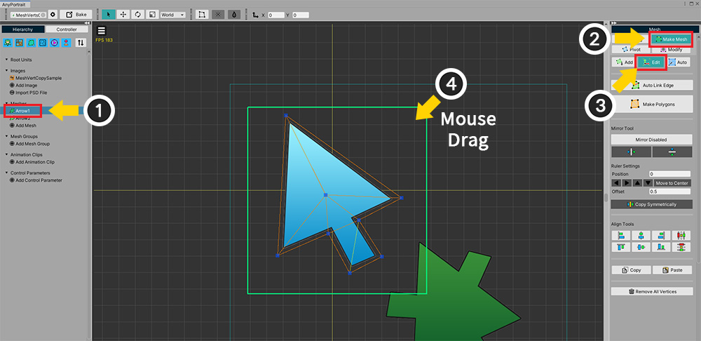

AnyPortrait > Manual > Copying Vertices
Copying Vertices
1.3.4
When there are two or more similar images in the Image Atlas, you can reduce repetitive work by copying the mesh vertices.
This page will show you how to copy and paste vertices of a mesh to the same mesh or to another mesh.

(1) Select the mesh.
(2) Select the Make Mesh tab.
(3) Select the Edit tool.
(4) Select the vertices to be copied.

(1) Vertices are selected.
(2) Press the Copy button to copy the vertices.

(1) Press the Paste button to paste the copied vertices.
Currently, there are existing vertices in the same position, so it is not distinguishable whether pasted or not.
(2) Select the move tool (shortcut W ).
(3) If you move it using the gizmo, you can see the copied vertices.

Now let's copy the vertices to another mesh.
After copying the vertices by clicking the Copy button, let's start the next operation.
(1) Create a new mesh.
(2) The new mesh created has no vertices.

(1) Select the Make Mesh tab.
(2) Select the Edit tool.
(3) Press the Paste button.
(4) You can paste the copied vertices into the current mesh.

You can use the copied vertices to quickly create meshes from similar images.